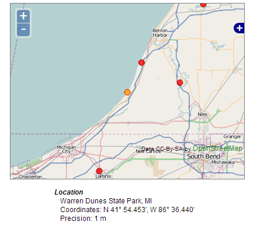
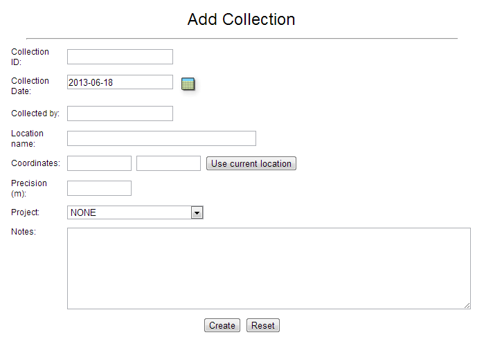

While strains can be acquired from other collections, often a researcher will want to isolate novel strains from material collected in the field. The CYANOS database can manage information about field collections, e.g. collector and geographic coordinates, as well as isolations, e.g. media, type and parent collection/isolation. The CYANOS database can also link isolations and strains, which allows one to ultimately link a collection in the field with a strain and its data.
Location information in the CYANOS database is handled using four fields: Name, Coordinates (latitude and longitude), and Precision.
The "Name" field is intended to hold the name or brief description of the location, e.g. Pacific Ocean, San Diego, CA or Burnham Park, Chicago, IL. The "Coordinates" fields hold the latitude and longitude data of the collection site. The CYANOS database can parse coordinate data in a variety of formats. The following are accepted formats. For all examples, the same location is used.
| Format | Examples | |
|---|---|---|
| Signed Decimal Degrees | DD.DDDD (negative for S/W) | 44.9050 or -86.0635 |
| Hemisphere, Decimal Degrees | H DD.DDDD | N 44.9050 or W 86.0635 |
| Degrees, Minutes | H DD MM.MMM' | N 44 54.301' or W 86 3.808' |
| Degrees, Minutes, Seconds | H DD MM' SS" | N 45 54' 18" or W 86 3' 49" |
By default, the CYANOS will display coordinate data using the H DD MM.MMM' format. In addition to the coordinates, the precision of the coordinates can be recorded. This value is not used by the database but stored for future reference, e.g. to aid in recollection.
If the CYANOS web interface is properly configured with a Google API Key (see the Installation Guide for configuration details) and the collection record has valid coordinates then the "Show map" feature will be enabled. If one clicks the "Show map" button, the web interface will build a map of the collection area along with markers for nearby collections.

Field collection data can added using either a web form or by uploading a spreadsheet. In either case, the same information can be added to the CYANOS database.

Often multiple field collections are made as part of a collection trip, thus creating a spreadsheet is typically more useful than the web form. As stated in the Interface Help Guide, a spreadsheet can be either a Microsoft Excel XML or OpenOffice.org file. The upload form can be access via the menu Collection > Upload Collections. The format of the spreadsheet should be as follows.
| Collection ID | Date | Collected by | Location Name | Latitude | Longitude | Lat/Long | Precision | Notes |
|---|---|---|---|---|---|---|---|---|
For each entry, only the "Collection ID" is required, although the collection date will be set to a default value, i.e. January 1, 1900, if not present in the spreadsheet.
Return to table of contentsThe isolation information stored allows one to keep track of isolation work as well as connect strains with collections. Isolation records can contain the following parameters: date, type, media, parent material, and notes. As with field collections, isolation IDs can consist of any combination of alphanumeric characters and must be unique. This isolation ID is important to connect strain records with isolation and collection information.
As with field collection data, isolation data can added using either a web form or by uploading a spreadsheet. In either case, the same information can be added to the CYANOS database.
As stated in the Interface Help Guide, a spreadsheet can be either a Microsoft Excel XML or OpenOffice.org file. The upload form can be access via the menu Collection > Upload Isolations. The format of the spreadsheet should be as follows.
| Isolation ID | Collection ID | Date | Parent | Type | Media | Notes | Project Code |
|---|---|---|---|---|---|---|---|
For each entry, the "Isolation ID" and "Parent" are required, although the isolation date will be set to a default value, i.e. January 1, 1900, if not present in the spreadsheet. The "Parent" value should be either the isolation ID of the parent isolation or the collection ID, if this isolation was made directly from the field collected material.
Return to table of contentsUltimately, an isolation should be linked to a strain in the collection. Since the strain will be linked to chemical and bioassay data, the isolation link allows one to associate bioassay and compound information with collection data, e.g. collection date and geographic location. To link a strain with an isolation record, the culture source of the strain should be set to the isolation ID of the parent isolation. The following figure shows a strain record with a culture source that does not corresponds to an isolation ID.
Once the culture source properly set to an isolation ID, the CYANOS database should be able to link the strain record with the isolation and collection information.

Required permissions listed in this table denote the role and permission bit, in parenthesis. Actions in italics utilize global level permissions only.
| Action | Required Permission |
| Add a new field collection | culture(Create) |
| Modify a field collection | culture(Write) |
| Add a new isolation | culture(Create) |
| Modify an isolation | culture(Write) |